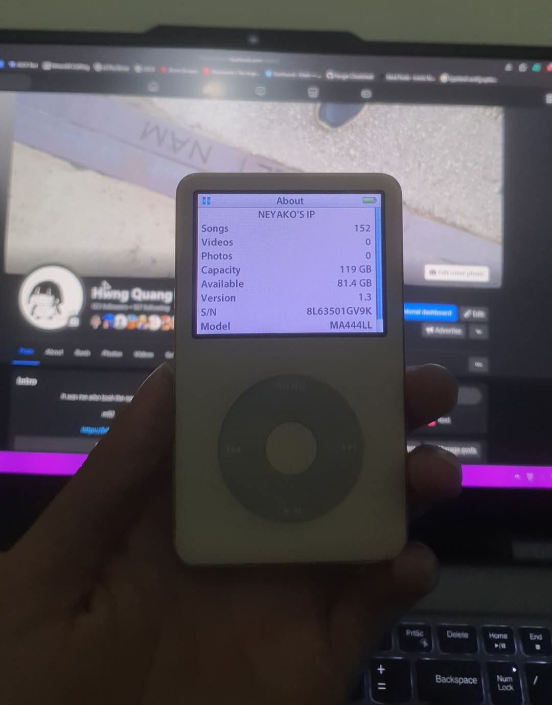
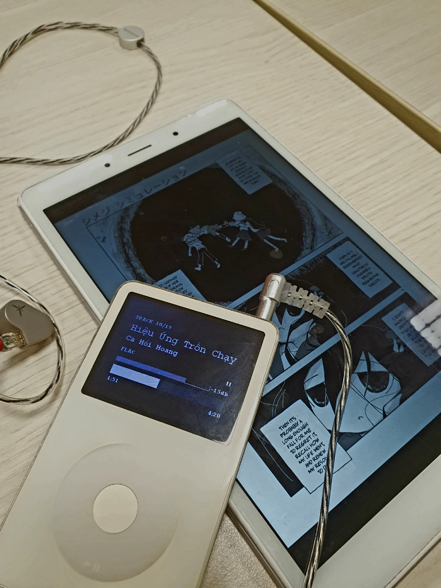

Using an iPod as the primary music listening option
2024, Dec 9
There is a recent trend lately about using iPods — Apple's infamous music device back in the 2000s, as alternative for most of the music streaming services nowadays, like Spotify or Apple Music. The medias are claiming that using a external device for music playing gives you many multiple advantages that related to distraction in working and ownership of the music that you listening to.
So I bought one for myself to check out if all the hypes were real. In October I bought a second-hand iPod Classic 5 (aka iPod Video) from Neyako for $50, which was a good deal at the moment since the demand for iPods was really high. The iPod has been replaced with a brand new battery and modified with a brand new 120GB SSD.
The hype is real
After two months of using the iPod (as of the time this post is being written), I can confirm that the hype was true. Using an iPod does help me reduce distraction and procrastination when compared to listening to music on my smartphone, as I can focus more on most of my work. Using a phone can lead to other unnecessary activities, such as browsing social media or other distractions.
Using an iPod also makes me appreciate each and every song that I have on my iPod. Of course, I'm using a modified firmware called Rockbox, so I can't say that I have the "legal" ownership to every song in my iPod, but at least I do have control over my music rather than having a subscription for music streaming services. Not to mention, the music quality has a huge boost when I switch from my phone with a TWS headphone to an iPod with an IEM headphone, which is a Moondrop Lan.
The cons
Talking back and forth, iPod also has its cons. No matter if you use purchased music from iTunes or ripped from other services, it's troublesome and inconvenient to always have a computer for adding or removing music. Another thing is that I use last.fm, so my listened tracks cannot be scrobbled, but to my surprise, Rockbox actually supports last.fm music scrobbling; it's just that the scrobbling has to be imported manually.
Should you buy an iPod in 2025 ?
If you are the kind of person that loves music, and you also love old tech, then you should definitely buy an iPod for a better music experience, with also a nostalgic feeling.